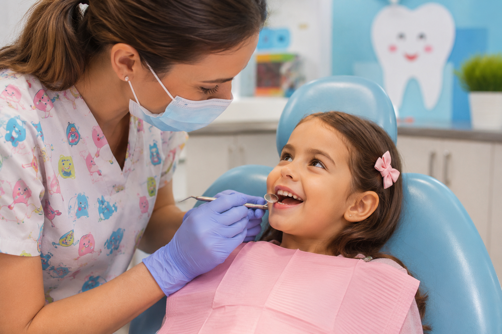
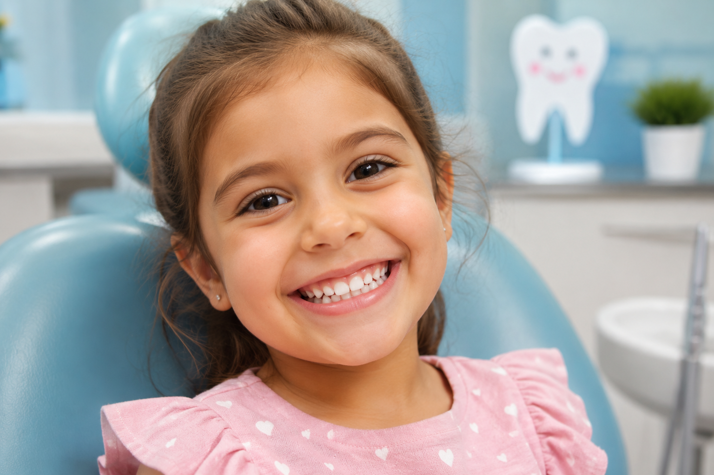

Board-Certified Pediatric Dental Specialists
Gentle Dentistry
for Growing Smiles
At Kings Kid, we understand that a child's early experiences shape their attitude toward dental health for life. Our practice is built on a foundation of compassion, clinical excellence, and a genuine love for working with children. From the first tooth to the last baby tooth, we provide comprehensive care that evolves with your child's unique developmental needs.
Every detail of our office has been thoughtfully designed to create a calm, welcoming atmosphere where children feel safe and parents feel informed. We combine advanced technology with gentle techniques to deliver the highest standard of pediatric dental care available today.
A Dental Home Built Around Your Child
Kings Kid was founded on a simple belief: every child deserves dental care that respects their individuality, acknowledges their fears, and celebrates their milestones. We are not a general dentist who also sees children. We are pediatric specialists whose entire training, experience, and passion is focused exclusively on the oral health of infants, children, and adolescents.
Child-Centered Philosophy
Everything we do begins with the child's perspective. We use age-appropriate language, demonstrate procedures on a stuffed animal before beginning, and move at a pace that honors each child's comfort level. No two children are alike, and no two appointments follow the exact same script.
Prevention & Education
The most powerful tool in pediatric dentistry is knowledge. We dedicate significant time during every visit to educating both parents and children about proper brushing, flossing, nutrition, and habits. Our goal is to prevent dental disease before it starts, saving families time, money, and discomfort.
Advanced Technology
Our practice invests continuously in modern dental technology including digital radiography with 90% less radiation, intraoral cameras that let children see inside their own mouths, laser dentistry for select soft tissue procedures, and computer-aided anesthesia delivery for virtually painless injections.
Safety & Comfort First
We adhere to and exceed all OSHA and CDC sterilization and infection control standards. Our team is certified in Pediatric Advanced Life Support (PALS), and we maintain rigorous protocols for sedation monitoring, emergency preparedness, and ongoing safety training.

Our treatment rooms feature child-friendly decor, ceiling-mounted televisions, and open layouts that allow parents to be present during care. Every detail is designed to reduce anxiety and create a positive association with dental visits.
Complete Pediatric Dental Care Under One Roof
From preventive care to complex restorative treatment and early orthodontic evaluation, Kings Kid offers the full spectrum of pediatric dental services. Our board-certified specialists are trained to manage everything from routine cleanings to dental emergencies and sedation dentistry.
Infant Oral Health & Early Exams
Recommended by age one or within six months of the first tooth. This visit includes a comprehensive oral examination, assessment of growth and development, evaluation of oral habits (thumb sucking, pacifier use), dietary counseling for optimal oral health, and hands-on instruction for parents on proper cleaning techniques. We also discuss teething management, fluoride needs, and injury prevention.
Early visits establish a dental home, allow us to monitor development from the start, and have been shown to significantly reduce future dental treatment needs and associated costs.
Preventive Cleanings & Examinations
Regular six-month recall visits include thorough professional cleaning to remove plaque and tartar, a comprehensive oral examination, digital X-rays only when clinically indicated, oral hygiene instruction tailored to your child's age and dexterity, and professional fluoride varnish application to strengthen enamel against decay.
Consistent preventive care is the cornerstone of lifelong oral health. Our gentle hygienists are specially trained to work with children of all ages and temperaments.
Dental Sealants
A thin, tooth-colored plastic coating painted onto the deep grooves of permanent molars. This simple, painless procedure creates a smooth surface that is much easier to clean, effectively sealing out food particles and cavity-causing bacteria. Sealants can reduce the risk of molar decay by up to 80% during the cavity-prone years of childhood and adolescence.
We recommend sealants on permanent molars as soon as they fully erupt, typically between ages 6 and 12. The procedure takes just minutes per tooth and requires no anesthetic.
Tooth-Colored Restorations (Fillings)
When cavities do occur, we use biocompatible composite resin materials that bond directly to tooth structure, require less removal of healthy tooth than traditional amalgam fillings, and match the natural color of teeth. These restorations are mercury-free, BPA-free, and durable enough to withstand years of chewing and grinding.
We take great care to ensure your child is completely numb and comfortable before beginning any restorative work. Our tell-show-do approach helps children understand each step.
Pulp Therapy & Pediatric Crowns
When decay extends deep into the nerve of a baby tooth, pulp therapy (often called a "baby root canal") can relieve pain, eliminate infection, and save the tooth until it naturally exfoliates. Following pulp treatment, a custom-fitted stainless steel or tooth-colored zirconia crown protects the remaining tooth structure.
Preserving baby teeth is essential for maintaining space for permanent teeth, supporting proper chewing and speech development, and protecting your child's self-esteem.
Interceptive Orthodontic Evaluation
Early orthodontic assessment (typically around age 7) allows us to identify developing problems with jaw growth, tooth alignment, and bite relationships. When indicated, interceptive treatment can guide jaw development, create space for crowded teeth, reduce the risk of trauma to protruding front teeth, and simplify or shorten future orthodontic treatment.
Not every child needs early treatment, but every child benefits from early evaluation. We provide honest, evidence-based recommendations.
Emergency & Trauma Care
Dental emergencies are frightening for both children and parents. We prioritize emergency calls and offer same-day appointments for trauma including knocked-out teeth, fractured or displaced teeth, severe toothaches, dental abscesses, and soft tissue injuries to the lips, cheeks, or tongue.
Our after-hours emergency protocol connects you directly with one of our doctors who will guide you through immediate steps and arrange for prompt in-office care.
Sedation Dentistry
For children with significant dental anxiety, special healthcare needs, or extensive treatment requirements, we offer in-office sedation options including nitrous oxide (laughing gas), oral conscious sedation, and IV sedation administered by a board-certified dental anesthesiologist. All sedation is performed under continuous monitoring of vital signs.
A thorough pre-sedation consultation ensures parents understand the process and that your child is an appropriate candidate. Safety is our absolute priority.
Space Maintainers
When a baby tooth is lost prematurely due to decay or trauma, a custom-fabricated space maintainer holds the space open to prevent neighboring teeth from shifting into the gap. This preserves the proper position for the developing permanent tooth and can prevent more complex orthodontic problems later.
Mouthguards for Sports
Custom-fabricated athletic mouthguards provide superior protection, comfort, and retention compared to over-the-counter options. We recommend professionally made mouthguards for any child participating in contact sports or activities with a risk of dental injury.
Investment in Your Child's Oral Health
We believe in complete transparency regarding the cost of dental care. Below is a guide to our most common procedures. Actual fees may vary based on your child's specific needs and will always be discussed in detail before treatment begins. We accept most major dental insurance plans and offer flexible payment options for families without coverage.
All fees include comprehensive treatment, local anesthesia when needed, and detailed post-operative instructions. A personalized treatment plan with exact costs is provided at your child's examination appointment.
Preventive & Diagnostic Care
- New Patient Comprehensive Exam (ages 0-12) $95 – $145
- Periodic Recall Exam (every 6 months) $55 – $75
- Professional Dental Cleaning (prophylaxis) $70 – $110
- Topical Fluoride Varnish Application $30 – $45
- Digital X-Ray Series (bitewings, 2-4 images) $45 – $80
- Panoramic Radiograph $85 – $120
- Dental Sealant (per tooth) $45 – $65
Restorative Treatment
- Composite (Tooth-Colored) Filling, One Surface $145 – $195
- Composite Filling, Two Surfaces $195 – $265
- Composite Filling, Three or More Surfaces $265 – $345
- Pulp Therapy (Primary Tooth) $295 – $425
- Stainless Steel Crown (Primary Molar) $275 – $375
- Zirconia (White) Crown (Primary Tooth) $395 – $525
- Simple Tooth Extraction (Primary Tooth) $110 – $185
- Space Maintainer (Fixed, per quadrant) $225 – $350
Sedation & Special Services
- Nitrous Oxide (Laughing Gas) per visit $55 – $85
- Oral Conscious Sedation (medication only) $175 – $275
- IV Sedation (per hour, anesthesiologist fee separate) Quoted individually
- Emergency/After-Hours Visit (established patients) $145 – $195
- Custom Sports Mouthguard $95 – $145
- Orthodontic Consultation (includes imaging) $85 (credited toward treatment)
Important: Fees listed are estimates for informational purposes and may vary based on individual circumstances, complexity, and insurance plan allowances. A detailed, written treatment plan with exact fees will be provided following your child's comprehensive examination. We file all insurance claims on your behalf and will work with you to maximize your benefits. For families without dental insurance, we offer an in-house membership plan with discounted rates — please inquire for details.
Dedicated Pediatric Dental Professionals
Our doctors are board-certified pediatric dentists who have completed an additional two to three years of rigorous, hospital-based specialty training beyond dental school. This advanced education focuses exclusively on the unique needs of children, including growth and development, behavior management, sedation, and treatment of patients with special healthcare requirements.
Dr. Suzie Mitchell
Board-Certified Pediatric Dentist | DMD, MS
Dr. Suzie Mitchell is the founder and lead pediatric dentist at Kings Kid. She completed her undergraduate studies at Duke University, graduating with distinction in Biology, before earning her Doctor of Dental Medicine degree from the University of Pennsylvania School of Dental Medicine, where she was inducted into the Omicron Kappa Upsilon national dental honor society.
Following dental school, Dr. Mitchell completed a two-year hospital-based pediatric dentistry residency at the Children's Hospital of Philadelphia, one of the nation's top-ranked children's hospitals. During her residency, she received extensive training in behavior management, dental trauma, sedation, and care for children with complex medical conditions.
Dr. Mitchell is a Diplomate of the American Board of Pediatric Dentistry, a distinction achieved through rigorous written and oral examinations that fewer than half of practicing pediatric dentists pursue. She is an active member of the American Academy of Pediatric Dentistry, the North Carolina Dental Society, and the American Dental Association.
Born and raised in North Carolina, Dr. Mitchell returned home after her training with a vision of creating a pediatric dental practice unlike any other — one where clinical excellence meets genuine warmth and where every child leaves feeling proud of their smile. She regularly attends continuing education courses to stay at the forefront of advances in pediatric dentistry.
Outside of the practice, Dr. Mitchell is married with two young children of her own, which she says gives her a daily appreciation for the concerns and priorities of the parents she serves. She enjoys running, reading, and volunteering with community organizations that support children's health and wellness.
Dr. Mary Park
Board-Certified Pediatric Dentist | DDS, MSD
Dr. Mary Park joined Kings Kid in 2018 after completing her specialty training and quickly became an integral part of our clinical team. She earned her Bachelor of Science in Neuroscience from Johns Hopkins University and her Doctor of Dental Surgery degree from Columbia University College of Dental Medicine, graduating with honors in clinical dentistry.
Dr. Park pursued her passion for pediatric care at Boston Children's Hospital / Harvard School of Dental Medicine, where she completed a three-year combined residency and Master of Science in Dentistry program. Her master's research focused on reducing dental anxiety in young children through modified communication techniques, work that has been published in several peer-reviewed journals.
In addition to her general pediatric dentistry expertise, Dr. Park has advanced training in dental trauma management, interceptive orthodontics, and the treatment of children with autism spectrum disorders and other developmental conditions. She is certified in Pediatric Advanced Life Support (PALS) and holds a permit for oral conscious sedation.
Dr. Park is a Diplomate of the American Board of Pediatric Dentistry and maintains active memberships in the American Academy of Pediatric Dentistry and the International Association of Paediatric Dentistry. She regularly mentors dental students and residents and has served as a guest lecturer on pediatric behavior guidance.
Patients and parents consistently describe Dr. Park as exceptionally patient, calm, and skilled at putting anxious children at ease. Her gentle demeanor and clear communication style have earned her a loyal following among Kings Kid families. When not in the office, Dr. Park is an enthusiastic photographer, an amateur baker, and a devoted uncle to her four nieces and nephews.
Our Clinical & Administrative Team
Behind every great dentist is an exceptional support team, and we are proud to have assembled some of the most talented and compassionate professionals in pediatric dentistry. Our registered dental hygienists hold specialized certifications in pediatric care and are experts at making cleanings comfortable and educational. Our certified dental assistants are trained in four-handed dentistry techniques that maximize efficiency and safety. Our patient coordinators and insurance specialists work tirelessly to make the administrative side of your visits seamless, from scheduling to insurance claims.
Every member of our team undergoes ongoing training in child development, behavior guidance, CPR and emergency protocols, and infection control. We share a collective commitment to creating a warm, respectful, and positive experience for every family who walks through our doors.
What Families Are Saying
The trust of the families we serve is our greatest honor. Here are some words from parents whose children have been in our care.
"My daughter had severe dental anxiety after a difficult experience at another practice. Dr. Mitchell and her team were incredibly patient — they spent over an hour just talking with her, showing her the instruments, and letting her set the pace. Now she actually looks forward to dental visits. I cannot recommend Kings Kid highly enough."
"Dr. Park is absolutely wonderful with my son who has autism. He took the time to understand his specific sensory needs, adjusted the environment accordingly, and communicated with him in a way that made complete sense. It was the most stress-free medical appointment we have ever had."
"I brought all three of my children here from their very first dental visits. The consistency of care, the thoroughness of the education we receive as parents, and the genuine warmth of the entire staff keeps us coming back. My oldest is now 14 and still loves coming to Kings Kid."
"When my son chipped his front tooth on a Saturday afternoon, I called the emergency line in a panic. Dr. Mitchell called me back within 10 minutes, calmed me down, and met us at the office an hour later. The tooth looks perfect now — you would never know anything happened. Above and beyond service."
Frequently Asked Questions
We believe informed parents make the best decisions for their children's health. Here are detailed answers to the questions we hear most often.
At what age should my child first see a dentist?
The American Academy of Pediatric Dentistry, the American Dental Association, and the American Academy of Pediatrics all recommend that children have their first dental visit by age one, or within six months of the eruption of the first tooth — whichever comes first. This may seem early, but there are several important reasons for this recommendation. Early visits allow us to detect potential problems before they become serious, provide parents with guidance on brushing, fluoride, and dietary habits, and help children become comfortable in the dental environment from a very young age. Studies show that children who establish a dental home by age one have significantly lower dental treatment costs over their childhood years compared to those who begin visits later.
How should I prepare my child for their first dental appointment?
The most important thing you can do is speak about the dentist in a positive, matter-of-fact tone. Avoid using words like "pain," "shot," "hurt," or "drill." Instead, describe the visit as a chance to "count teeth" and "make them sparkly clean." Read age-appropriate children's books about dental visits in the days leading up to the appointment. Consider bringing your child along to a sibling's or your own dental cleaning so they can see what happens. On the day of the appointment, schedule it for a time when your child is typically well-rested and fed. Bring a favorite comfort item if your child has one. Our team is exceptionally skilled at making first visits positive and will guide both you and your child through every step.
Are dental X-rays safe for children?
Yes, absolutely. We use modern digital radiography, which reduces radiation exposure by up to 90% compared to traditional film X-rays. The amount of radiation from a set of digital bitewing X-rays is roughly equivalent to the background radiation a person receives during a short airplane flight or a day spent outdoors. We only take X-rays when clinically necessary based on your child's individual caries risk assessment, and we always use protective lead aprons with thyroid collars. For children at low risk for cavities, X-rays may only be needed every 12-24 months. For those at higher risk, more frequent imaging may be indicated to catch developing problems early.
What if my child is extremely anxious or uncooperative?
This is very common, and managing dental anxiety is a core part of our specialty training. We use a variety of evidence-based techniques including tell-show-do (explaining and demonstrating before performing), positive reinforcement, distraction, and a gentle, patient pace. We never force treatment on a struggling child. For children with significant anxiety or those requiring extensive treatment, we may recommend nitrous oxide (laughing gas), which provides relaxation while the child remains fully awake and responsive. In more complex situations, oral conscious sedation or IV sedation with a board-certified anesthesiologist can be arranged. The decision is always made collaboratively with parents after a thorough discussion of risks, benefits, and alternatives.
Do you treat children with special healthcare needs?
Yes, we have extensive experience and training in caring for children with a broad range of medical, developmental, physical, and behavioral conditions including autism spectrum disorder, Down syndrome, cerebral palsy, ADHD, sensory processing disorders, and many others. We take the time to understand each child's unique medical history, communication style, sensory sensitivities, and specific needs. Appointments can be scheduled for longer blocks of time when needed, and we are happy to coordinate care with your child's pediatrician, specialists, and therapists. We encourage parents of children with special needs to contact us before the first visit so we can discuss how to best prepare for a successful experience.
How does dental insurance work at your practice?
We are in-network with many major dental insurance plans and will file claims on your behalf as a courtesy. Our insurance coordinator will verify your benefits before treatment and provide you with an estimate of any out-of-pocket costs. Please understand that dental insurance is structured differently than medical insurance — it typically functions as a benefit with an annual maximum, not as comprehensive coverage. We recommend that all parents understand their plan's deductibles, co-payments, annual maximums, and covered services. For families without dental insurance, we offer an in-house membership plan that includes preventive care at a discounted rate and reduced fees on restorative treatment. We accept cash, checks, all major credit cards, and HSA/FSA payments.
What is your policy on parents being present during treatment?
We welcome parents in the treatment room during examinations and procedures. We find that most children do best with a trusted adult nearby, and we value the opportunity to communicate directly with parents about what we are seeing and doing. The only exceptions would be rare situations where a parent's presence is inadvertently increasing a child's anxiety — in those cases we would discuss alternative approaches with you privately and respectfully. Our treatment rooms are designed with comfortable seating for parents, and we encourage you to be as involved in your child's care as you wish to be.
What should I do if my child knocks out a permanent tooth?
Time is critical. Find the tooth, hold it by the crown (the white part that you normally see in the mouth), and avoid touching the root. If the tooth is dirty, rinse it gently in milk or saline solution — do not scrub it or use water for more than a second or two. If possible, reinsert the tooth into the socket and have your child bite down on clean gauze to hold it in place. If reinsertion is not possible, place the tooth in a container of milk or saliva. Call our emergency line immediately. The best outcomes occur when the tooth is reimplanted within 30-60 minutes. For baby teeth that are knocked out, do not attempt to reinsert them; contact us for evaluation to ensure no damage has occurred to the developing permanent tooth underneath.
Office Hours & Location
Conveniently located with ample free parking. We offer extended Thursday hours and Saturday morning appointments to accommodate working parents and school schedules.
Our Office
2408 Oak Meadow Drive, Suite 120
Raleigh, North Carolina 27615
Telephone: (919) 482-6170
Fax: (919) 482-6171
After-Hours Emergencies: Established patients with urgent dental concerns outside of regular business hours should call our main line and follow the prompts to reach the on-call doctor. If you are experiencing a life-threatening medical emergency, please dial 911 or go to your nearest emergency room.
Our reception area features a dedicated play zone, children's books, and comfortable seating for parents. We want every visit to begin with a sense of ease and welcome.
Schedule an Appointment
We are currently accepting new patients and would be honored to welcome your family to Kings Kid. Please use the form below or call us directly to schedule your child's visit or ask any questions you may have.
Office Address
2408 Oak Meadow Drive, Suite 120
Raleigh, North Carolina 27615
Conveniently located off Interstate 540 with ample free parking directly in front of the building.
Contact Information
Main Office: (919) 482-6170
Fax: (919) 482-6171
Email: hello@kingskid.dental
New Patient Forms
To save time at your child's first appointment, you may download and complete our new patient registration and health history forms in advance.
Download Forms (PDF)Insurance & Payment
We are in-network with Delta Dental, Cigna, MetLife, Aetna, Guardian, and many other plans. We also offer an affordable in-house membership plan for uninsured families. Please call for details specific to your plan.